“Raised him” — the neighbour who looked after David as a boy
Edit
Links are shared — this same row appears on Rivka, Rachel and Moshe’s records, and can be edited from either side.
Life events
9 events · 7 photos＋ Add event
⋮⋮
1931
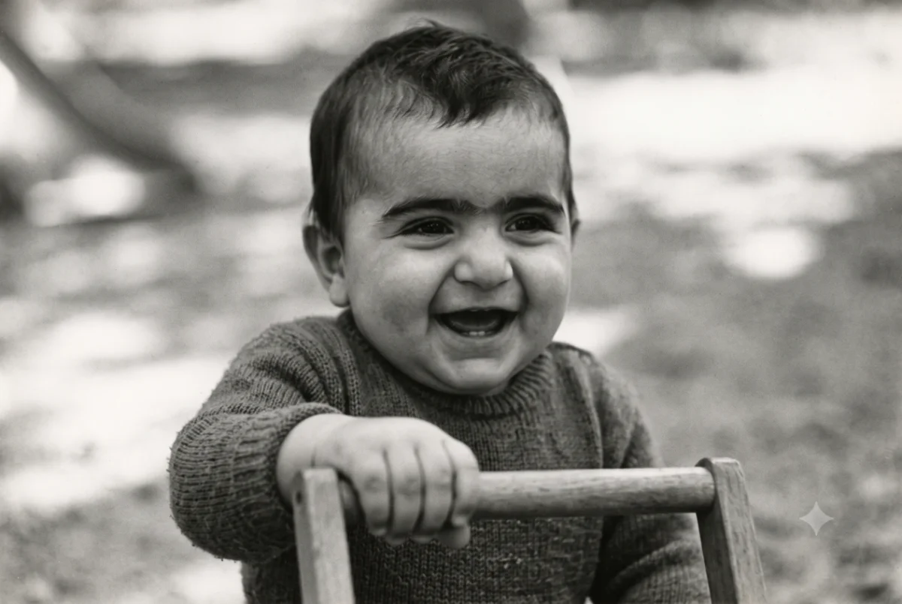
Born in Haifa
First photograph, wrapped tight, outside the bakery on Herzl Street…
Major◉
⋮⋮
1949
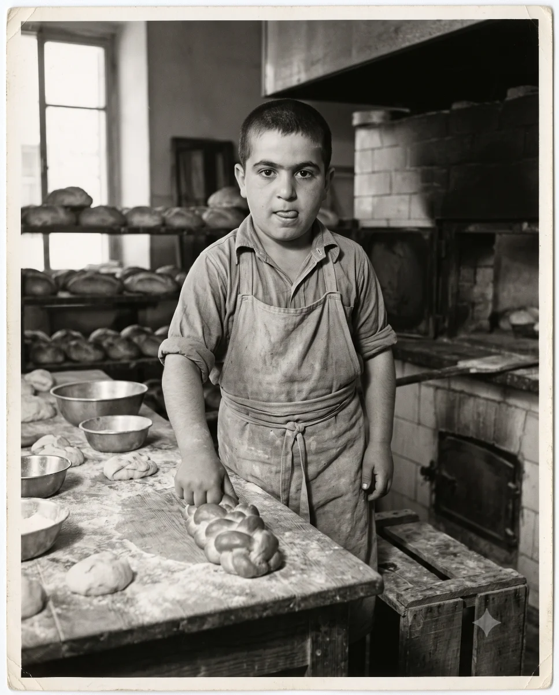
Army service
Eighteen, in uniform, the year after independence…
Minor◉
⋮⋮
1958
Married Rivka
Under the chuppah in Haifa — linked to Rivka’s record too
Major◉
⋮⋮
between 1958 & 1966
＋
The workshop years · undated moment
User-authored — give it a year to pin it to the timeline
Minor◉
⋮⋮
1966
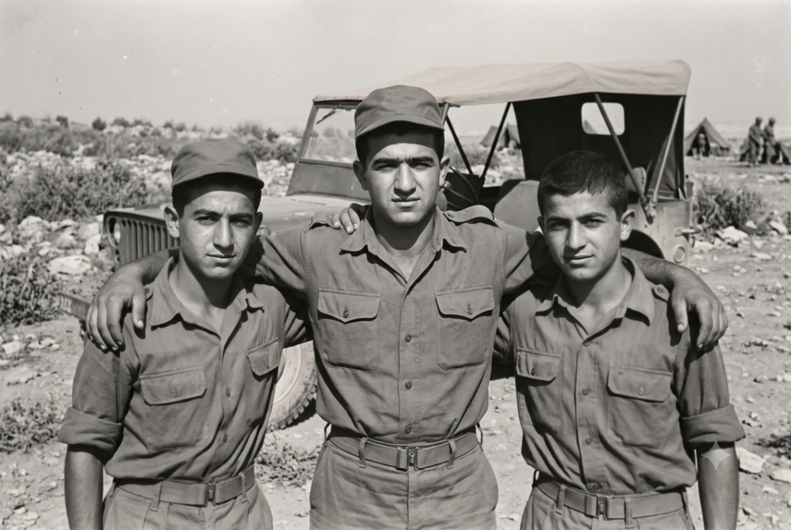
The move to Tel Aviv
The flat on Dizengoff, boxes to the ceiling…
Minor⊘
⋮⋮
1969
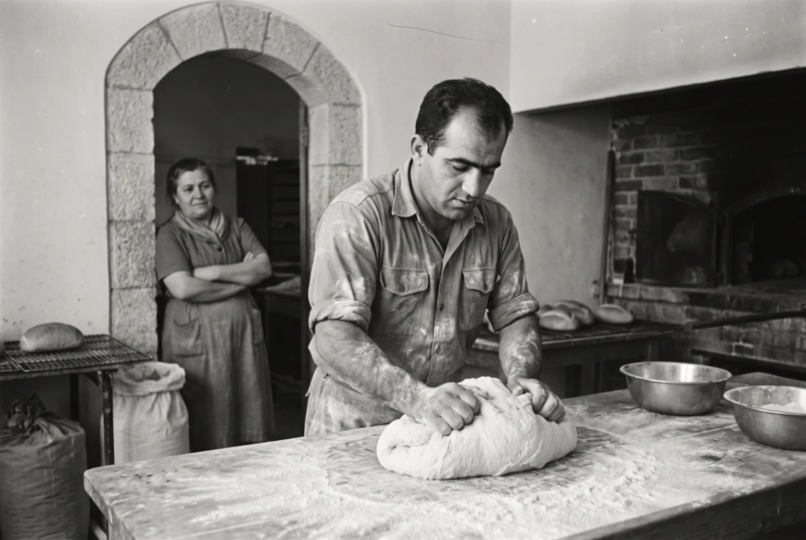
Rivka’s passing, and after
The hardest year — Moshe next door kept the children fed…
Major◉
2 · Add link — starts from either person, saved to both
Add a link from David
Marriage
Side link
Godparent
Custom…
David Adler
this record
⇄
?
Choose a person…
or add someone new
1958
ongoing / blank
Married · e.g. “Raised him”, “Godfather”, “Like a mother”
⇄ One link, two records — it will appear on both people and can be edited or removed from either side. No separate “unions” screen needed.
3 · World events — the shared history band
World events
27 on the band · 14 off
All · 41Headlines · 19Milestones · 9Culture · 8Family · 5Landmarks onlyTurned off · 14
Year
Photo
Event
Category
Touches
On band
1912
The Titanic sinks
Minor · Miriam was three; the papers reached Vilnius weeks later
Headlines
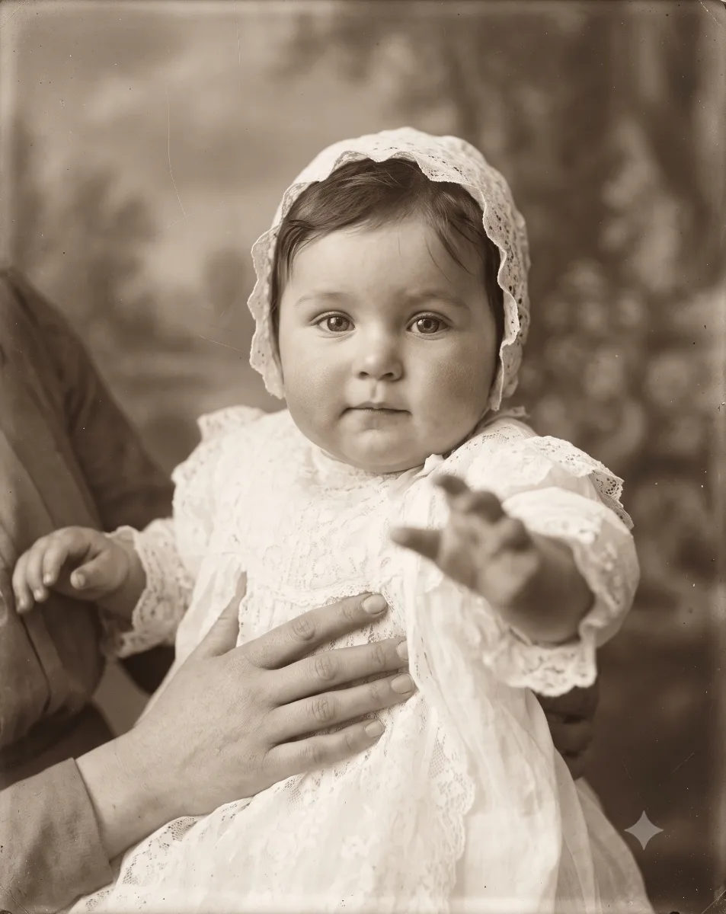
1
Edit
1929
Yosef & Miriam marry
Family · from Miriam’s record — edits happen there, the band just shows it
Family
Open ↗
1948
The State of Israel is born
Landmark · the whole family’s hinge year
Milestones
+6
Edit
1958
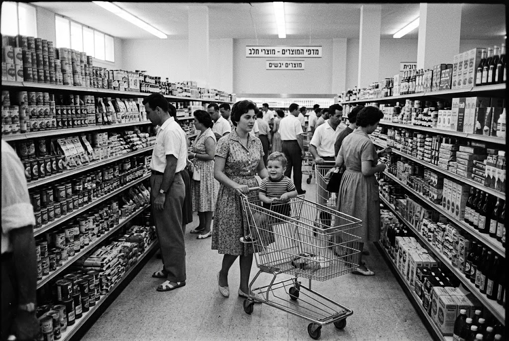
The first supermarket opens
Minor · self-service arrives — Miriam was unimpressed
Culture
1
Edit
1958
David marries Rivka
Family · a landmark for the whole tree — shown on everyone’s timeline that year
Family
+2
Open ↗
1969
Man walks on the moon
Minor · watched on the neighbourhood’s only television
Milestones
+3
Edit
1978
Israel wins the Eurovision
Minor · “A-Ba-Ni-Bi” and the whole street singing
Culture
+2
Edit
1991
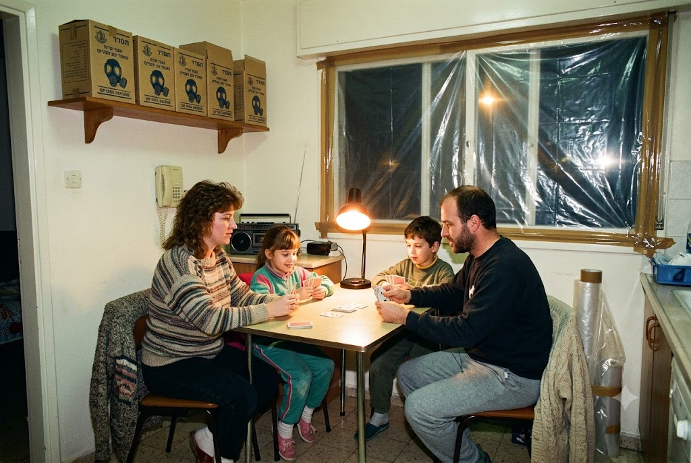
Gulf War
Landmark · sealed rooms and cardboard boxes of masks
Headlines
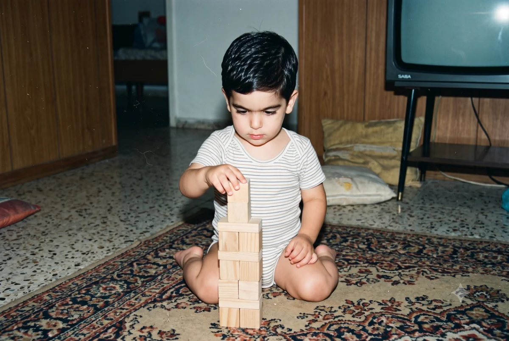
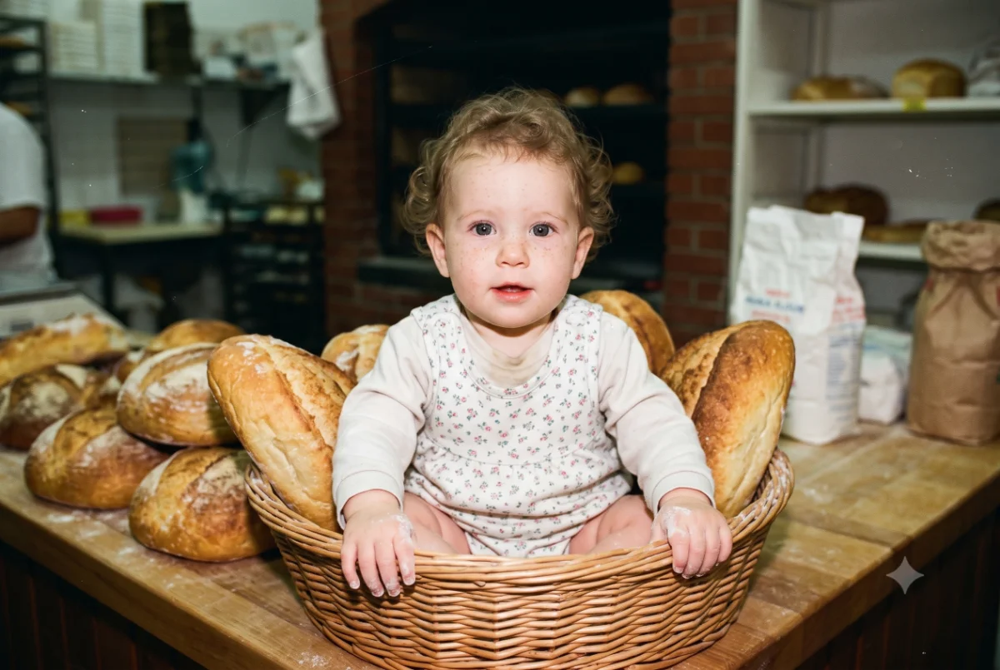
+4
Edit
2019
Yonatan is born
Family · the fifth generation begins — auto-suggested from major milestones
Family
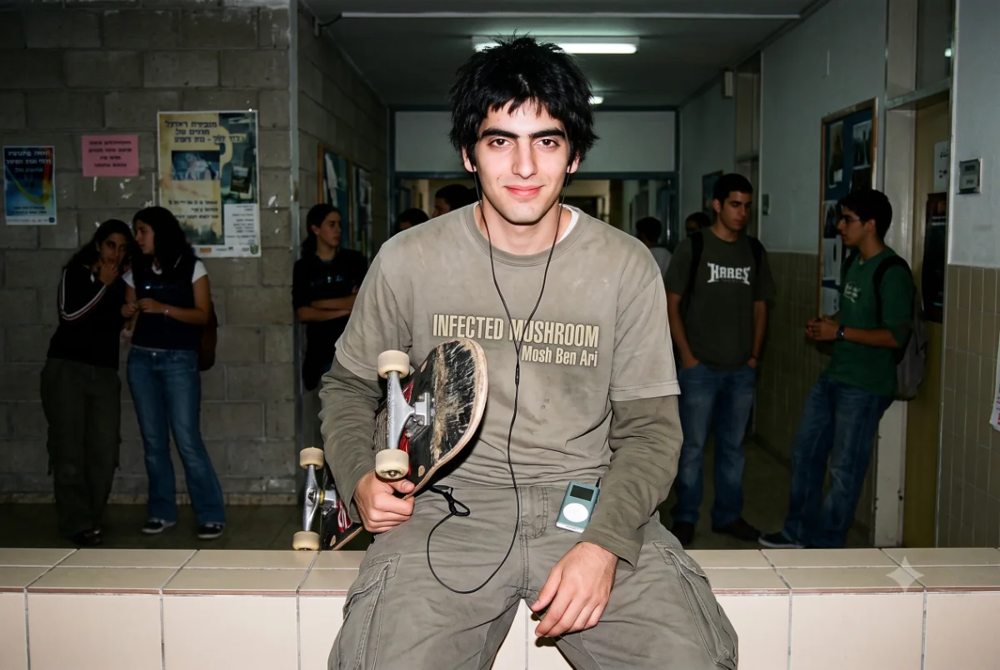
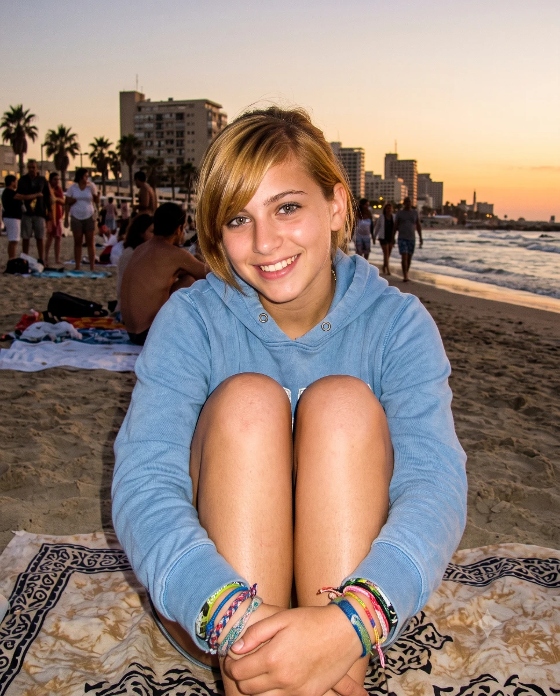
+8
Open ↗
4 · Places — registry with duplicate detection
Places
7 places across 61 mentions
Place
Mentions
Used by
Haifa, Israel
Births ×9 · events ×18
27
+7
Edit
Tel Aviv, Israel
Births ×6 · events ×12
18
+4
Edit
Tel-Aviv possible duplicate
1 mention · likely “Tel Aviv, Israel”
1
Merge
Vilnius, Lithuania
The old country — Yosef’s chapter one
4
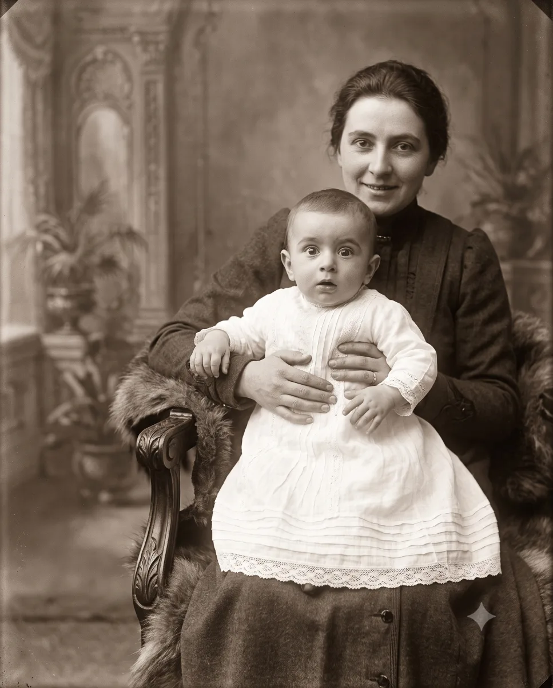
Edit
London, England
Michael’s first 25 years
5
Edit
Beersheba, Israel
Tamar’s childhood
3
Edit
5 · Health — coverage gaps & orphans, links into every screen
Record health
checked just now · v33
92%
events have photos 117 of 126 slots filled
3
undated moments waiting for a year
2
orphaned photos event was removed
◔
Tal Adler has only 3 life events — thinnest record in the family
Open record →
?
“The workshop years” (David) is undated — pin it between 1958 and 1966
Set year →
?
“The first stall” (Miriam) is undated — pin it between 1934 and 1943
Set year →
▣
ph-yonatan-e2.webp points at an event that no longer exists
Re-attach →
⇄
Side link Dov → Hannah has no year — shows undated on both records
Fix link →
6 · Photos — every slot: baked, pending, hidden, orphaned
Photos
126 slots · 117 filled
⌕ Search by person or event…
All · 126Pending · 2Hidden from tree · 3Orphaned · 2Empty slots · 9
David Adler
1958 · Married Rivka
Baked · v31
Sarah Adler
1999 · Retired after 43 years
Baked · v29Hidden
Maya Adler
2026 · A doctor at last
Pending save
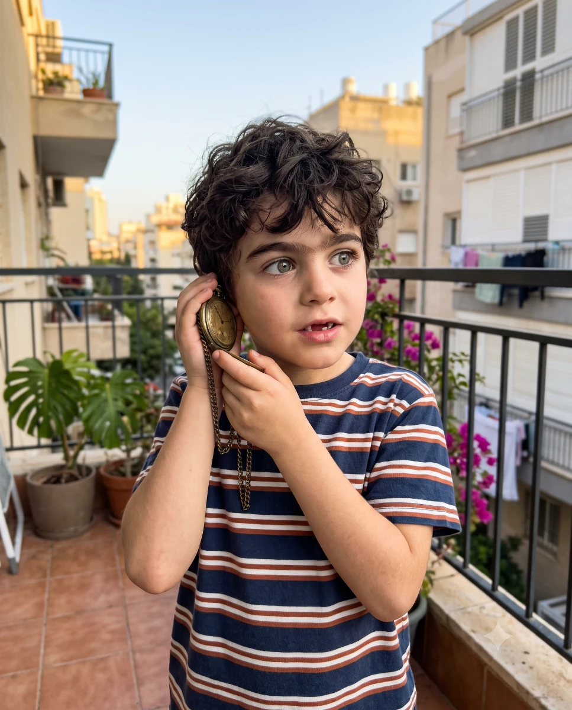
Yonatan Adler
event removed — re-attach?
Orphaned
Miriam Adler
1929 · Married Yosef
Baked · v18
Eli Adler
2012 · Architecture school
Baked · v22
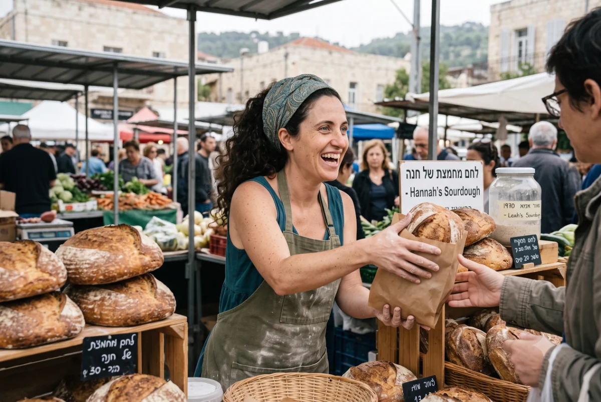
Hannah Friedman
2026 · Carrying the starter forward
Pending save
Tal Adler 2015 · First day of school ＋ drop a photo
7 · Event editor — every field, incl. shared events
Edit event — David Adler
Prompt is composed from the year, place, story and David’s character sheet — decade look applied (1950s b&w). Crop is edited on the tree card.
1958 · or “between…”
MajorMinor
Married Rivka
Under the chuppah in the courtyard in Haifa, 1958 — Rivka in her mother’s veil, David in a borrowed suit, and the whole street invited whether they liked it or not.
Haifa, Israel · from the Places registry
⇄ Shared event — also appears on Rivka’s record at 1958. Edits apply to both.
Visibility
TreeLife storyTimelineDraft · hidden everywhere until ready
8 · Add person — the placement question is the whole flow
Add a person
e.g. Ruth Adler
רות אדלר
year · place
Female
Place in the family
Child of…Pick one or two parents — generation and tree position follow automatically
Daniel Adler
Noa Bar
Married inJoins as a spouse — pick who they married; a marriage link is created both ways
Outside the familyA neighbour, godparent, dear friend — connected only by side links, like Moshe and Dov
9 · Name history — on the person record (Leah)
Name history — Leah Friedman
＋ Add change
Birth
Leah Adler · לֵאָה אַדְלֶר
1963 · Haifa
Marriage
Adler → Friedman
1989 · took Michael’s name — linked to their marriage, edits stay in sync
1989Edit
Kinds: marriage · immigration (like Yosef’s Adlerstein → Adler, 1934) · official change. The tree and focus view show “born …” automatically.
10 · Dirty state — Records Room edits join the same Save pipeline
Save · 3 changesEvery edit here becomes an op — same chip, same copy-to-Claude flow as the tree.
Maya · event 2026 — photo replacedjust now
David ⇄ Rivka — marriage end-year set to 19682 min ago
Places — “Tel-Aviv” merged into “Tel Aviv, Israel”5 min ago
Undo/redo (⌘Z) works across tree and Records Room. On paste, Claude bakes ops into family-data.js / tree-seed.js → v34.
11 · Character sheet — one description feeds every image prompt
Character sheet — Yosef Adler
Edit
Slight build, deep-set grey eyes, strong brow; full dark beard as a young man, white and close-trimmed from the 1960s. Wire-rimmed glasses after 1950.
The brass pocket-watch (always) · watchmaker's loupe · dark waistcoat, sleeves rolled
ph-yosef-e2 · anchor for likeness
auto by decade
✦ Every “Image prompt” for Yosef starts from this sheet + his age that year — so he stays the same person from Vilnius 1903 to Haifa 1978.
12 · Privacy & visibility — person, link and world-event level
Tal Adler · minor
Node stays on the tree; photos & life story hidden from public view
Protected
Yonatan Adler · minor
Same — editors with ?edit=1 still see everything
Protected
Side link
Dov → Hannah · “Godfather”
Hide the plum line on busy trees; still shown in both life stories
On tree
World event
Moon landing · 1969
Per event: history band · woven into personal stories
BandStories
All toggles are ops in the Save pipeline — publish decides what the family sees, not just this browser.